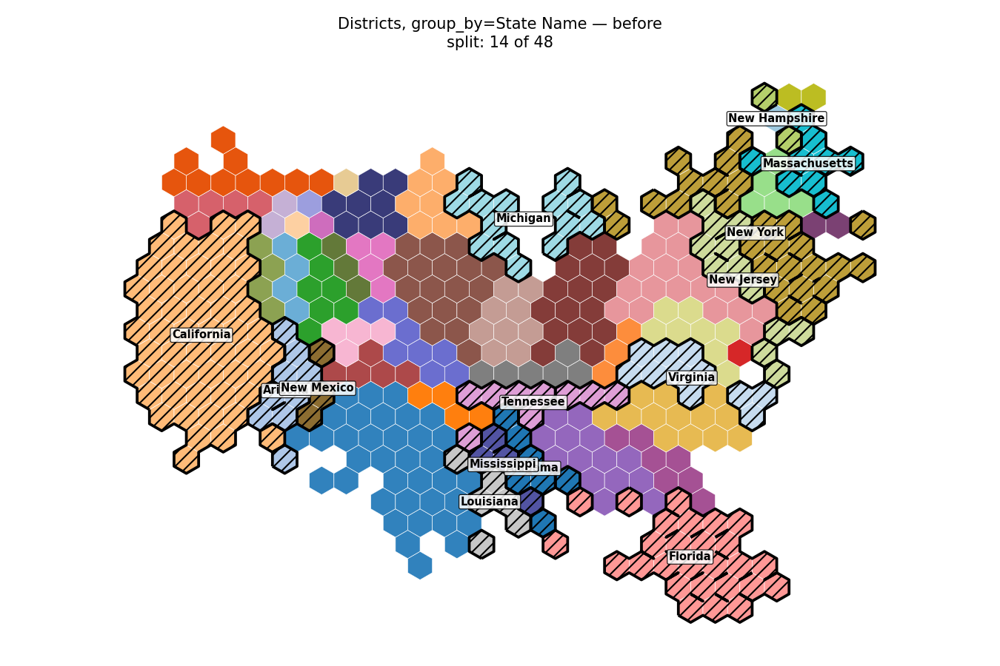
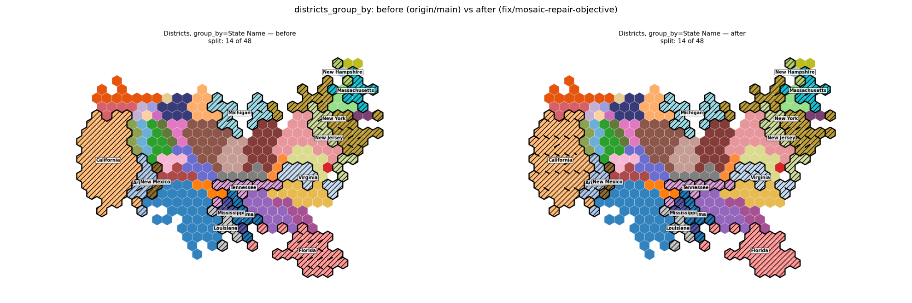
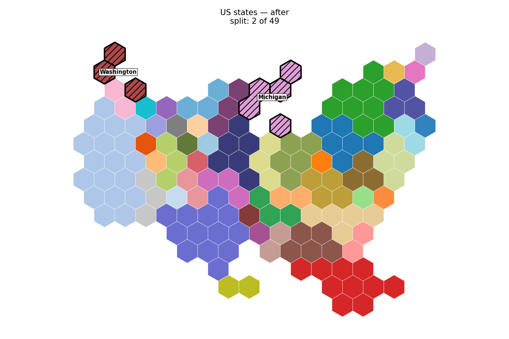
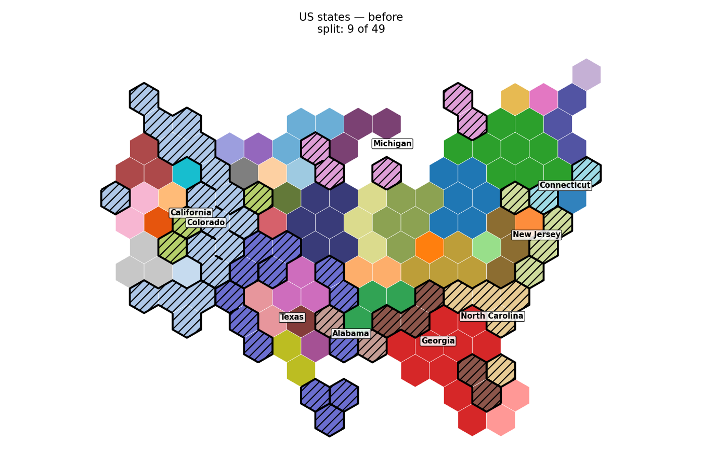
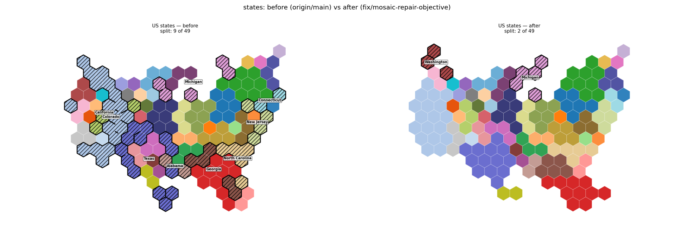

The mosaic repair loop ranked passes by disconnected tiles, which is not monotone in split regions; it now ranks by split regions with the tile score as tie-breaker. US states go from 9 split states to 2.
Tiles are coloured one colour per region (tab20 + tab20b + tab20c, 60 distinct colours); districts are coloured by their state. A region whose tiles form more than one block is outlined in black, hatched, and labelled with its name.
In states_before_after.png the left panel has nine hatched states, several of them badly scattered (California, Texas, Colorado). The right panel has two, both of which are already split in the raw Hungarian solve.
| Case | Regions correct | Non-contiguous regions | Split groups | Repair passes | Wall time |
|---|---|---|---|---|---|
| 3x3 synthetic fixture | 9/9 - 9/9 | 2 - 2 | - | 15 - 2 | 0.07 s - 0.06 s |
| US states (154 tiles) | 49/49 - 49/49 | 9 - **2** | - | 15 - 2 | 3.07 s - 1.98 s |
| Districts (1 tile each) | 432/432 - 432/432 | 0 - 0 | - | 15 - 3 | 5.36 s - 5.14 s |
Districts + group_by | 432/432 - 432/432 | 0 - 0 | 14 - 14 | 15 - 2 | 5.35 s - 4.99 s |
(Each cell reads "before - after".)
Before, US states split Alabama, California, Colorado, Connecticut, Georgia, Michigan, New Jersey, North Carolina and Texas. After, Michigan and Washington. The after set is not a subset of the before set: Washington splits in the raw solve that is now kept.
"Repair passes" is the new MosaicMetrics.repair_passes for the after column; before, the loop always ran to the max_connectivity_iters cap of 15 (+1 initial solve) because it kept finding a better tile score.
Districts + group_by, branch, one colour per state.

Districts + group_by, origin/main, one colour per state.

Congressional districts grouped by state: unchanged at 14 of 48 split states, shown to confirm no regression.

US states, branch, one colour per state.

US states, origin/main, one colour per state.

US states: split states outlined, hatched and labelled. 9 of 49 before, 2 of 49 after (Michigan and Washington remain).